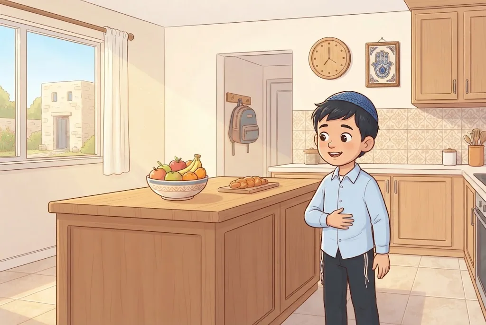

🛠️מְלָאכָה בְּעֶרֶב פֶּסַח
מֵחֲצוֹת הַיּוֹם שֶׁל עֶרֶב פֶּסַח אָסוּר לַעֲשׂוֹת מְלָאכָה חֲשׁוּבָה, כְּמוֹ תְּפִירַת בְּגָדִים, בְּנִיַּת רָהִיטִים, נְטִיעַת שְׁתִילִים וְתִסְפֹּרֶת. כִּי זֶה הַזְּמַן שֶׁבּוֹ הָיוּ מַקְרִיבִים אֶת קָרְבַּן הַפֶּסַח, וְהוּא כְּמוֹ יוֹם טוֹב.
מֻתָּר לְבַשֵּׁל, לְנַקּוֹת אֶת הַבַּיִת וְלִנְסֹעַ לְקִרְאַת הַחַג. גַּם מֻתָּר לְגַהֵץ, לְצַחְצֵחַ נַעֲלַיִם, לִגְזֹז צִפָּרְנַיִם וּלְהִתְגַּלֵּחַ בִּמְכוֹנַת גִּלּוּחַ. וְיֵשׁ מְהַדְּרִים לְהִתְגַּלֵּחַ וְלִגְזֹז צִפָּרְנַיִם לִפְנֵי חֲצוֹת.
💛 אַהֲבַת הַשֵּׁם: חֲכָמִים רָצוּ שֶׁלֹּא נִהְיֶה טְרוּדִים בַּעֲבוֹדָה וְנִשְׁכַּח לְהָכִין אֶת הַמַּצּוֹת וְהַיַּיִן. הַלֵּב כֻּלּוֹ פָּנוּי לִקְרַאת הַלַּיְלָה הַקָּדוֹשׁ.
👦תַּעֲנִית בְּכוֹרוֹת
הַבְּכוֹרִים נוֹהֲגִים לְהִתְעַנּוֹת בְּעֶרֶב פֶּסַח, זֵכֶר לַנֵּס: כָּל בְּכוֹרֵי מִצְרַיִם מֵתוּ, וּבְכוֹרֵי יִשְׂרָאֵל נִצְּלוּ. צָם מִי שֶׁהוּא בְּכוֹר לְאָבִיו אוֹ בְּכוֹר לְאִמּוֹ, וְגַם בְּכוֹרֵי כֹּהֲנִים וּלְוִיִּם. בַּת בְּכוֹרָה – לְפִי הַמִּנְהָג הָרוֹוֵחַ אֵינָהּ צָמָה.
אַבָּא שֶׁנּוֹלַד לוֹ בֵּן בְּכוֹר – צָם בִּמְקוֹם בְּנוֹ עַד שֶׁיִּגְדַּל. וְזֶה צוֹם קַל: מִי שֶׁכּוֹאֵב לוֹ הָרֹאשׁ, אוֹ חוֹשֵׁשׁ שֶׁלֹּא יוּכַל לְקַיֵּם כָּרָאוּי אֶת מִצְווֹת הַסֵּדֶר – לֹא צָם.
💛 אַהֲבַת הַשֵּׁם: בְּכוֹרֵי יִשְׂרָאֵל הֶאֱמִינוּ בַּה׳ וְשָׂמוּ אֶת דַּם הַפֶּסַח עַל הַמְּזוּזוֹת – וְנִצְּלוּ. הַבְּכוֹר צָרִיךְ לִהְיוֹת רִאשׁוֹן בָּאֱמוּנָה, וְאַחֲרָיו יֵלְכוּ אֶחָיו.
⭐הַבְּכוֹר – רִאשׁוֹן בָּאֱמוּנָה
בְּכָל בְּכוֹר יֵשׁ ״רִאשׁוֹנִיּוּת״ – אִתּוֹ מַתְחִיל הַדּוֹר הַחָדָשׁ, וְלָכֵן יֵשׁ עָלָיו אַחְרָיוּת גְּדוֹלָה. פַּרְעֹה, שֶׁהָיָה בְּכוֹר, הִתְגָּאָה וְכָפַר בַּה׳. בְּכוֹרֵי יִשְׂרָאֵל שָׁחֲטוּ אֶת הַשֶּׂה וְשָׂמוּ אֶת דָּמוֹ עַל הַמְּזוּזוֹת בִּמְסִירוּת נֶפֶשׁ – וְנִצְּלוּ.
לָכֵן לִפְנֵי לֵיל הַסֵּדֶר הַבְּכוֹרִים חוֹזְרִים בִּתְשׁוּבָה וּשׁוֹאֲלִים: הַאִם אֲנַחְנוּ מְגַלִּים אֶת שֵׁם ה׳ כָּרָאוּי? וְרֹב הַבְּכוֹרִים מַקְדִּישִׁים אֶת הַבֹּקֶר לְשִׂמְחַת סִיּוּם מַסֶּכֶת.
💛 אַהֲבַת הַשֵּׁם: גַּם הַיּוֹם הָרִאשׁוֹן שֶׁל פֶּסַח הוּא ״בְּכוֹר״ – בּוֹ ה׳ הִתְחִיל לְהִתְגַּלּוֹת לְעַם שָׁלֵם. מִי שֶׁהוֹלֵךְ רִאשׁוֹן בְּטוֹב, מוֹשֵׁךְ אַחֲרָיו אֶת כֻּלָּם.
📖סִיּוּם מַסֶּכֶת
רֹב הַבְּכוֹרִים בָּאִים בְּעֶרֶב פֶּסַח, אַחֲרֵי תְּפִלַּת שַׁחֲרִית, לְסִיּוּם מַסֶּכֶת. אַחֲרֵי הַסִּיּוּם מַגִּישִׁים כִּבּוּד, וְכֻלָּם טוֹעֲמִים. זוֹ סְעוּדַת מִצְוָה שֶׁל שִׂמְחַת הַתּוֹרָה, וּמִי שֶׁאוֹכֵל בָּהּ נִפְטָר מֵהַצּוֹם.
סִיּוּם שֶׁפּוֹטֵר הוּא סִיּוּם שֶׁל מַסֶּכֶת גְּמָרָא, סֵדֶר מִשְׁנָה אוֹ סֵפֶר חָשׁוּב, שֶׁלָּמְדוּ אוֹתוֹ בַּהֲבָנָה טוֹבָה. מִי שֶׁיּוֹדֵעַ שֶׁהַצּוֹם לֹא יַפְרִיעַ לוֹ בַּסֵּדֶר יָכוֹל לָצוּם, כְּמוֹ הָרַב קוּק וּבְנוֹ הָרַב צְבִי יְהוּדָה.
💛 אַהֲבַת הַשֵּׁם: שִׂמְחַת הַתּוֹרָה גְּדוֹלָה כָּל כָּךְ, עַד שֶׁהִיא מַחְלִיפָה אֶת הַצּוֹם. הַבְּכוֹר נִכְנָס לַפֶּסַח מִתּוֹךְ לִמּוּד וְשִׂמְחָה.
🚫בְּעֶרֶב פֶּסַח – בְּלִי מַצָּה
חֲכָמִים אָסְרוּ לֶאֱכֹל מַצָּה בְּעֶרֶב פֶּסַח, כְּדֵי שֶׁנֹּאכַל אוֹתָהּ בַּלַּיְלָה בְּתֵאָבוֹן וּבְחִבָּה. הָאִסּוּר מַתְחִיל בַּעֲלוֹת הַשַּׁחַר, וְהוּא חָל גַּם עַל יְלָדִים שֶׁמְּבִינִים שֶׁהַמַּצָּה זֵכֶר לִיצִיאַת מִצְרַיִם. לִקְטַנִּים שֶׁעוֹד לֹא מְבִינִים – מֻתָּר.
קְצִיצוֹת מְבֻשָּׁלוֹת מִקֶּמַח מַצָּה (קְנֵידְלַךְ) – מֻתָּר לֶאֱכֹל בְּעֶרֶב פֶּסַח לְכָל הַדֵּעוֹת. וְיֵשׁ שֶׁנִּמְנָעִים מִמַּצָּה כְּבָר מֵרֹאשׁ חֹדֶשׁ נִיסָן, אוֹ שְׁלֹשִׁים יוֹם לִפְנֵי פֶּסַח.
💛 אַהֲבַת הַשֵּׁם: מִי שֶׁמְּחַכֶּה לְמַשֶּׁהוּ – אוֹהֵב אוֹתוֹ יוֹתֵר. כְּשֶׁאָנוּ מַמְתִּינִים לַמַּצָּה כָּל הַיּוֹם, הִיא נִכְנֶסֶת לַלֵּב בַּלַּיְלָה כְּמַתָּנָה.
🍰מָה אוֹכְלִים בְּעֶרֶב פֶּסַח?
חָמֵץ מֻתָּר עַד סוֹף הַשָּׁעָה הָרְבִיעִית שֶׁל הַיּוֹם. מַצָּה אֲסוּרָה כָּל הַיּוֹם. קְצִיצוֹת מְבֻשָּׁלוֹת מִקֶּמַח מַצָּה – מֻתָּרוֹת לְכָל הַדֵּעוֹת. עוּגוֹת שֶׁנֶּאֶפוּ מִקֶּמַח מַצָּה – יֵשׁ מַחְמִירִים, וְאֶפְשָׁר לְהָקֵל, וְהַמַּחְמִיר תָּבוֹא עָלָיו בְּרָכָה.
מֵהַשָּׁעָה הָעֲשִׂירִית, כְּשָׁלֹשׁ שָׁעוֹת לִפְנֵי הַחַג, לֹא אוֹכְלִים מִינֵי מְזוֹנוֹת – כְּדֵי לֶאֱכֹל אֶת הַמַּצָּה בַּלַּיְלָה בְּתֵאָבוֹן. מִי שֶׁרָעֵב יָכוֹל לֶאֱכֹל מְעַט פֵּרוֹת, יְרָקוֹת, בָּשָׂר אוֹ דָּגִים.
💛 אַהֲבַת הַשֵּׁם: כָּל הַיּוֹם מְכַוְּנִים אֶת הַגּוּף לִקְרַאת הַלַּיְלָה. גַּם הָרָעָב שֶׁל עֶרֶב פֶּסַח הוּא הֲכָנָה לְמִצְוָה.

🍷מַצָּה עֲשִׁירָה
״מַצָּה עֲשִׁירָה״ הִיא מַצָּה שֶׁנִּלּוֹשָׁה בְּמִיץ פֵּרוֹת, כְּמוֹ יַיִן אוֹ שֶׁמֶן. לְמִנְהַג הַסְּפָרַדִּים מֻתָּר לְאָכְלָהּ בְּפֶסַח וּבְעֶרֶב פֶּסַח. לְמִנְהַג הָאַשְׁכְּנַזִּים – אָסוּר.
כַּיּוֹם יֵשׁ סְפֵקוֹת גְּדוֹלִים עַל הַדֶּרֶךְ שֶׁבָּהּ מְיַצְּרִים מַצָּה עֲשִׁירָה, וְלָכֵן רַבִּים מֵהַפּוֹסְקִים אוֹמְרִים שֶׁגַּם הַסְּפָרַדִּים צְרִיכִים לְהִמָּנַע מִמֶּנָּה. וְגַם מִי שֶׁאוֹכֵל אוֹתָהּ – רַק עַד סוֹף הַשָּׁעָה הַתְּשִׁיעִית.
💛 אַהֲבַת הַשֵּׁם: כָּל עֵדָה שׁוֹמֶרֶת עַל הַמִּנְהָג שֶׁקִּבְּלָה מֵאֲבוֹתֶיהָ. כְּשֶׁאָנוּ מְכַבְּדִים זֶה אֶת מִנְהָגוֹ שֶׁל זֶה, כָּל עַם יִשְׂרָאֵל יוֹשֵׁב יַחַד לְסֵדֶר אֶחָד.
🐑סֵדֶר קָרְבַּן פֶּסַח
נוֹהֲגִים לוֹמַר אַחֲרֵי מִנְחָה שֶׁל עֶרֶב פֶּסַח אֶת ״סֵדֶר קָרְבַּן פֶּסַח״ – פְּסוּקִים וְסֵדֶר הַהַקְרָבָה. כְּשֶׁאֵין בֵּית מִקְדָּשׁ, הַלִּמּוּד עַל הַקָּרְבָּן הוּא כְּמוֹ תַּחֲלִיף לַקָּרְבָּן עַצְמוֹ.
הַמַּהֲרַ״ל כָּתַב שֶׁקָּרְבַּן הַפֶּסַח מְבַטֵּא אַחְדּוּת: אוֹכְלִים אוֹתוֹ בַּחֲבוּרָה, לֹא עוֹבְרִים מֵחֲבוּרָה לַחֲבוּרָה, צוֹלִים אוֹתוֹ כִּי הַצְּלִיָּה מְאַחֶדֶת אֶת הַבָּשָׂר, וְלֹא שׁוֹבְרִים בּוֹ עֶצֶם – כִּי שְׁבִירָה הִיא פֵּרוּד.
💛 אַהֲבַת הַשֵּׁם: ה׳ אֶחָד, וְעַם יִשְׂרָאֵל צָרִיךְ לִהְיוֹת מְאֻחָד כְּדֵי לְגַלּוֹת אֶת שְׁמוֹ. יְהִי רָצוֹן שֶׁנִּזְכֶּה לְהַקְרִיב כֻּלָּנוּ יַחַד אֶת קָרְבַּן הַפֶּסַח בְּבֵית הַמִּקְדָּשׁ.
🧠 בְּדֹק אֶת עַצְמְךָ
מַה דִּינָהּ שֶׁל ״מַצָּה עֲשִׁירָה״, שֶׁנִּלּוֹשָׁה בְּיַיִן וְשֶׁמֶן?
💡 לְמִנְהַג הַסְּפָרַדִּים מַצָּה עֲשִׁירָה מֻתֶּרֶת מִן הַדִּין, וּלְמִנְהַג הָאַשְׁכְּנַזִּים אֲסוּרָה. וְכַיּוֹם, בִּגְלַל סְפֵקוֹת בַּיִּצּוּר, רַבִּים מֵהַפּוֹסְקִים אוֹמְרִים שֶׁגַּם הַסְּפָרַדִּים יִמָּנְעוּ מִמֶּנָּה.
עֶרֶב פֶּסַח, שָׁלֹשׁ שָׁעוֹת לִפְנֵי הַחַג. אֵיתָן רָעֵב מְאוֹד. מָה מֻתָּר לוֹ לֶאֱכֹל?
💡 מֵהַשָּׁעָה הָעֲשִׂירִית לֹא אוֹכְלִים מִינֵי מְזוֹנוֹת, כְּדֵי לֶאֱכֹל אֶת הַמַּצָּה בַּלַּיְלָה בְּתֵאָבוֹן. מֻתָּר לֶאֱכֹל מְעַט פֵּרוֹת, יְרָקוֹת, בָּשָׂר אוֹ דָּגִים. מַצָּה אֲסוּרָה כָּל הַיּוֹם.
לָמָּה, לְפִי הַמַּהֲרַ״ל, אָסוּר לִשְׁבֹּר עֶצֶם בְּקָרְבַּן הַפֶּסַח?
💡 הַפֶּסַח מְבַטֵּא אֶת אַחְדּוּת ה׳ וְאַחְדּוּת יִשְׂרָאֵל. לָכֵן אוֹכְלִים אוֹתוֹ בַּחֲבוּרָה, צוֹלִים אוֹתוֹ שֶׁהַבָּשָׂר יִתְאַחֵד, וְלֹא שׁוֹבְרִים בּוֹ עֶצֶם – כִּי שְׁבִירָה הִיא פֵּרוּד.
📚 עוֹד חָמְרֵי לִמּוּד עַל הֲלָכָה – חִנָּם, בַּמַּאֲגָר הַקּוֹל הַחֲמִישִׁי:
kol-toda.co.il/halacha
הַמַּאֲגָר הַמָּלֵא: kol-toda.co.il
הַמַּאֲגָר הַמָּלֵא: kol-toda.co.il